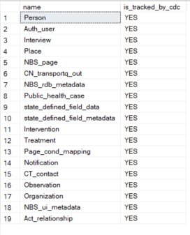
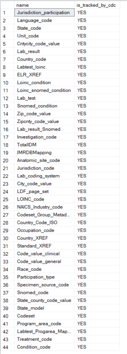

Deploy the real-time reporting (RTR) add-on
This feature is in Beta preview and not production ready.
Real-time reporting (RTR) is an optional add-on for NBS 7. RTR reduces reporting latency from as long as 24 hours to between 5 minutes and 1 hour. It uses Kafka Connect to stream row-level changes from source tables, which reduces reliance on the MasterETL batch process.
This guide covers steps to install RTR with Helm charts. RTR transfers data from the transactional database NBS_ODSE to the reporting database RDB. Change Data Capture on select NBS_ODSE and NBS_SRTE tables detects row-level changes (see Create service users and database objects for the full table list). Those changes publish to Kafka topics, where RTR services extract and load the data into RDB.
On this page
- Prerequisites
- Set up the rdb_modern database
- Create service users and database objects
- Ongoing database upgrades
- Deploy RTR services
The database scripts referenced throughout this guide are maintained in the NEDSS-DataReporting repository. You can create the required database objects through Liquibase, which will automatically implement database schema changes, or you can manually install database schema changes. Both options are referenced in the relevant sections.
If you encounter issues during database setup, contact support at nbs@cdc.gov.
Prerequisites
-
RTR installation requires NBS 6.0.17 or higher. To verify your baseline NBS release version, run one of the following queries:
USE NBS_ODSE; SELECT max(Version) current_version FROM NBS_ODSE.dbo.NBS_Release;Or:
USE [NBS_ODSE]; SELECT * FROM NBS_configuration WHERE config_key = 'CODE_BASE'; - Verify that the following classic ETL batch jobs have completed successfully:
MasterETL.batPHCMartETL.batcovid19ETL.bat
Back up the RDB database before you proceed. This step cannot be undone.
- Choose a database path and use it consistently throughout this guide. Both paths support Liquibase or manual installation.
- RDB path: Use
RDBas the default reporting database. Turn off the classic ETL batch jobs and proceed to the next step. - rdb_modern path: Create a separate reporting database. To create the database, see Create rdb_modern database before moving on to the next step.
- RDB path: Use
-
Set the environment variable for your chosen path.
RDB path: Insert the following value into
NBS_configuration:IF NOT EXISTS(SELECT 1 FROM NBS_ODSE.DBO.NBS_configuration WHERE config_key ='ENV' AND config_value ='PROD') INSERT INTO NBS_ODSE.dbo.NBS_configuration (config_key, config_value, short_name, desc_txt, default_value, valid_values, category, add_release, version_ctrl_nbr, add_user_id, add_time, last_chg_user_id, last_chg_time, status_cd, status_time, admin_comment, system_usage, config_value_large) VALUES(N'ENV', N'PROD', N'RTR reporting database', N'Indicates scripts should be run against RDB database', NULL, N'UAT, PROD', N'RTR', N'7.11.0', 1, 0, getdate(), 0, getdate(), N'A', getdate(), NULL, NULL, NULL);rdb_modern path: This setting overrides the default
RDBduring script execution unless a script explicitly prompts for a database.IF NOT EXISTS(SELECT 1 FROM NBS_ODSE.DBO.NBS_configuration WHERE config_key ='ENV' AND config_value ='UAT') INSERT INTO NBS_ODSE.dbo.NBS_configuration (config_key, config_value, short_name, desc_txt, default_value, valid_values, category, add_release, version_ctrl_nbr, add_user_id, add_time, last_chg_user_id, last_chg_time, status_cd, status_time, admin_comment, system_usage, config_value_large) VALUES(N'ENV', N'UAT', N'RTR reporting database', N'Indicates scripts should be run against UAT rdb_modern database', NULL, N'UAT, PROD', N'RTR', N'7.11.0', 1, 0, getdate(), 0, getdate(), N'A', getdate(), NULL, NULL, NULL);
Set up the rdb_modern database
If you are on the rdb_modern path, complete this section. If you are on the RDB path, skip this section.
If a separate database is required, restore RDB as rdb_modern. This keeps the classic ETL-hydrated RDB available while hosting components needed for RTR.
The following steps use Amazon RDS stored procedures (
rds_backup_database,rds_restore_database). If you are not using Amazon RDS, consult your database administrator for equivalent backup and restore procedures.
- Back up RDB:
- Sign in to the AWS Management Console and navigate to RDS.
- In the Options group, verify that the Backup and Restore option is enabled for your RDS SQL Server instance.
- Open a SQL client and connect to the SQL Server RDS instance.
-
Run the following procedure to back up the SQL Server database to S3:
exec msdb.dbo.rds_backup_database @source_db_name='RDB', @s3_arn_to_backup_to='arn:aws:s3:::cdc-nbs-state-upload-shared/Classic-6.0.16/rdb_classic_2024_07_22_5pmet.bak', @type='FULL' -
Run the following procedure to check the status:
exec msdb.dbo.rds_task_status;
- Restore
rdb_modern:- Open a SQL client and connect to the SQL Server RDS instance.
-
Run the following procedure to restore RDB as
rdb_modern:exec msdb.dbo.rds_restore_database @restore_db_name='rdb_modern', @s3_arn_to_restore_from='arn:aws:s3:::cdc-nbs-state-upload-shared/Classic-6.0.16/rdb_classic_gdit_07_10_5pmet.bak', @type='FULL'; -
Run the following procedure to check the status:
exec msdb.dbo.rds_task_status;
Create service users and database objects
Complete these one-time onboarding steps for RTR setup.
Generate passwords for each service user before running the scripts. Password generation can take several minutes. Do not use spaces, equal signs (
=), or colons (:). These characters cause script execution failures.
-
Create database users. Each user should have only the permissions required for its role. Review the scripts and update the
PASSWORDvalues before execution.- Create admin user: This user provides Liquibase permissions to maintain required database components for RTR and enable Change Data Capture on tables.
- Script location: NEDSS-DataReporting onboarding user creation scripts
- Create RTR microservice user logins: Create dedicated user accounts for each RTR microservice. These users are referenced in Helm values for RTR services.
- Script location: NEDSS-DataReporting onboarding user creation scripts
- Create admin user: This user provides Liquibase permissions to maintain required database components for RTR and enable Change Data Capture on tables.
-
Create Kubernetes secrets. Kubernetes secrets are required for RTR services to access the database. Create secrets for each service user from step 1. Skip this step if you already created secrets in Create secrets in your cluster.
- Create secrets for each service user: Include the admin user from step 1a. Each secret should include the database username and password.
- Script location: NEDSS-DataReporting/create-kubernetes-secrets
- Create secrets for each service user: Include the admin user from step 1a. Each secret should include the database username and password.
-
Create required database objects. Run the scripts for your chosen path:
-
Liquibase: See Deploy Liquibase to create all necessary objects, then return here to complete step 4.
-
Manual: See the script execution sequence and
db_upgradescript in NEDSS-DataReporting/db-upgrade. Run:
upgrade_db.bat server_name <database> username password -
-
Load data and enable Change Data Capture. This one-time step is required after all database objects are created in step 3.
-
Liquibase: The
--load-dataflag is not required when using Liquibase. Proceed to Deploy RTR services. -
Manual: Navigate to the 02_onboarding_script_data_load and run all of the scripts in the order listed in the repository.
-
-
Verify Change Data Capture.
is_cdc_enabled=1indicates successful configuration.SELECT name, is_cdc_enabled FROM sys.databases; -- View ODSE tables with CDC enabled USE NBS_ODSE; SELECT name, CASE WHEN is_tracked_by_cdc = 1 THEN 'YES' ELSE 'NO' END AS is_tracked_by_cdc FROM sys.tables WHERE is_tracked_by_cdc = 1; -- View SRTE tables with CDC enabled USE NBS_SRTE; SELECT name, CASE WHEN is_tracked_by_cdc = 1 THEN 'YES' ELSE 'NO' END AS is_tracked_by_cdc FROM sys.tables WHERE is_tracked_by_cdc = 1;The following images show expected query results for a successful Change Data Capture configuration.
CDC-enabled tables in NBS_ODSE: 
CDC-enabled tables in NBS_SRTE: 
-
Back up all databases. Before going live, take backups of
NBS_ODSE,NBS_SRTE,RDB, andrdb_modern(if applicable).
If Change Data Capture is not producing data after
rdb_modernis restored, run the following script:USE NBS_ODSE; EXEC sp_changedbowner 'sa';
Ongoing database upgrades
After onboarding, future enhancements are delivered using one of these approaches:
- Liquibase: Run Liquibase with the provided release tag. See Deploy Liquibase.
- Manual: Run the scripts in manual_deployment. Onboarding scripts are excluded from upgrade runs.
Deploy RTR services
RTR services use Kubernetes secrets for database credentials. Create secrets for each microservice user and the admin user. The secrets should include the database username and password for each service user. For more information, see Create secrets in your cluster.
Deploy the RTR services in the following order: